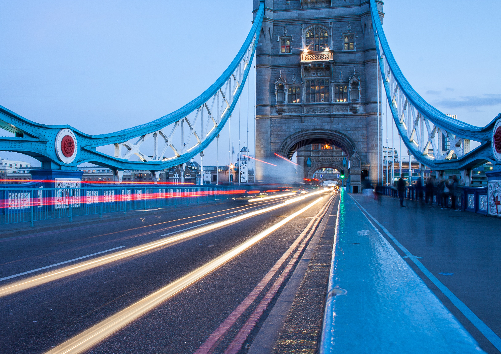

London
Tower Bridge
Tower Bridge
Tower Bridge is a combined bascule and suspension bridge in London built between 1886 and 1894. The bridge crosses the River Thames close to the Tower of London and has become an iconic symbol of London. Because of this, Tower Bridge is sometimes confused with London Bridge, situated some 0.5 mi (0.80 km) upstream. Tower Bridge is one of five London bridges now owned and maintained by the Bridge House Estates, a charitable trust overseen by the City of London Corporation. It is the only one of the Trust's bridges not to connect the City of London directly to the Southwark bank, as its northern landfall is in Tower Hamlets.

The bridge consists of two bridge towers tied together at the upper level by two horizontal walkways, designed to withstand the horizontal tension forces exerted by the suspended sections of the bridge on the landward sides of the towers. The vertical components of the forces in the suspended sections and the vertical reactions of the two walkways are carried by the two robust towers. The bascule pivots and operating machinery are housed in the base of each tower. Before its restoration in the 2010s, the bridge's colour scheme dated from 1977, when it was painted red, white and blue for Queen Elizabeth II's Silver Jubilee. Its colours were subsequently restored to blue and white.
The bridge deck is freely accessible to both vehicles and pedestrians, whereas the bridge's twin towers, high-level walkways and Victorian engine rooms form part of the Tower Bridge Exhibition, for which an admission charge is made. The nearest London Underground tube stations are Tower Hill on the Circle and District lines, London Bridge on the Jubilee and Northern lines and Bermondsey on the Jubilee line, and the nearest Docklands Light Railway station is Tower Gateway. The nearest National Rail stations are at Fenchurch Street and London Bridge.